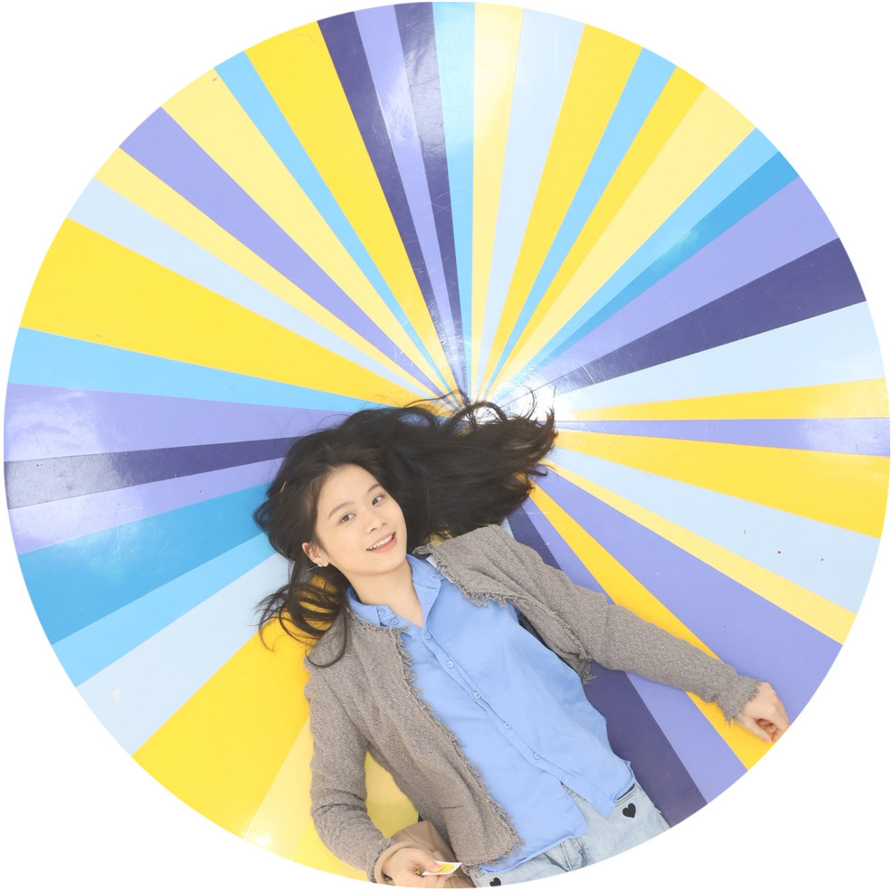

Jiachen (Amber) Liu
Compute Infrastructure
I build compute infrastructure for large-scale AI systems, with a focus on computer resource efficiency: getting more useful work out of every GPU, every watt, and every dollar of compute. I earned my PhD in Computer Science at the University of Michigan and spent time at Meta working on infrastructure for large-scale model training. Now I'm building a stealth startup to develop the next generation of this infrastructure.
Outside of work, I enjoy basketball, traveling, and finding the best bubble tea in every new city.